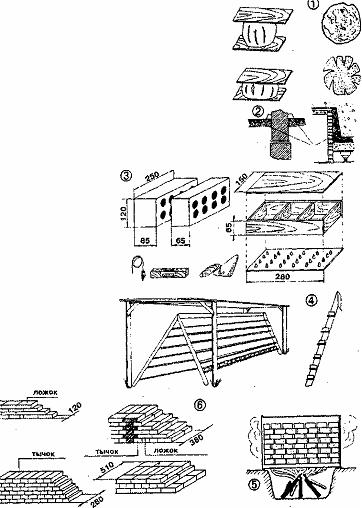

ИЗДАНИЕ 58
Главное - раздобыть глину. Найти ее можно прямо на участке или в ближайшем карьере.. Механическая прочность кирпича зависит прежде всего от ее состава и чистоты. Поэтому сначала убедитесь, надлежащего ли она качества.
Существует несколько способов определения жирности глины. Расскажем о самом простом.
Возьмите 0,5л глины, добавьте в нее немного воды и тщательно размешайте до тех пор, пока она не вберет в себя всю влагу и не станет прилипать к рукам. Приготовив крутое тесто, скатайте из него шарик диаметром 40-50 мм и лепешку диаметром 100 мм. Затем просушите в тени два-три дня. Если на шарике или лепешке за это время появились трещины, значит, глина слишком жирная и требует добавления песка. А трещин нет. и шарик, брошенный с высоты 1 м, не рассыпался, - глина нормальной жирности. Тощие глины не растрескиваются, но и не имеют прочности, в них придется подмешивать более жирную глину. Добавляют песок или глину в несколько приемов, каждый раз про
веряя качество полученной массы.
Когда оптимальный состав раствора будет найден, приготовленное глиняное тесто можно использовать не только для изготовления кирпича, но и в качестве гидроизоляции для фундаментов, глиняного замка для колодца (см. рис. 2).
По способу изготовления кирпич бывает двух видов: обожженный (обычный красный) и необожженный (кирпич-сырец). Последний, если приготовлен из хорошей глины и правильно высушен, во многом не уступает обожженному. Его вполне можно использовать для строительства небольших сооружений, например, сарая или бани. С него и начнем.
Прежде всего изготовим простейшую форму (см. рис. 3). Материал для нее - доски толщиной 20-25 мм и два листа фанеры. Габариты выбраны по размерам стандартного кирпича: 250x120x65 мм. Нижняя и верхняя крышки имеют конические выступы, формирующие в кирпиче пустоты. Они улучшают его контакт с раствором. Все детали формы соединяются гвоздями длиной 50-60 мм. Верхнюю крышку сделайте съемной. Таких форм изготовьте несколько, чтобы дело двигалось быстрее.
Перед тем как заполнить форму, слегка смочите ее внутреннюю поверхность водой и присыпьте мелкой пылью или цементом. Это облегчит выемку заготовок.
Разложите глиняное тесто по формам и хорошенько встряхните, чтобы оно заполнило все углы. Излишки" теста снимите строительной кельмой или металлической пластиной. Теперь наложите верхнюю крышку и, подержав некоторое время, снимите. Перевернув форму, выньте заготовку.
Следующий этап - сушка. Это ответственный процесс. И не так прост, как может показаться. По мере испарения влаги частицы в заготовке сближаются силами поверхностного натяжения и объем кирпича уменьшается. Усадка имеет определенный предел - до 15%. После чего сокращения объема не происходит, хотя физически связанная вода еще не успевает полностью испариться.
Для сушки лучше всего изготовить стеллаж с навесом (см. рис. 4).
Важно, чтобы кирпичи не попадали под прямое воздействие солнечных лучей и хорошо проветривались. Длительность сушки зависит от температуры, влажности и подвижности наружного воздуха и занимает примерно от 6 до 15 суток.
Водостойкость кирпича-сырца низкая, поэтому стены из него нужно хорошо защитить от воздействия влаги. Длина свеса кровли должна быть не менее 600 мм, швы кладки тщательно перевязаны, а оконные и дверные проемы расположены не ближе 1,5 м от углов.
Для балок перекрытий поверху стен сделайте сплошную обвязку из пластин или толстых досок, соединенных друг с другом гвоздями. Через год стены обязательно оштукатурьте глиняным раствором с примесью соломы. Еще лучше облицевать наружную сторону обожженным кирпичом, перевязав облицовку через пять-шесть рядов по высоте тычковыми рядами.
Раз уж зашла речь о кладке, остановимся на ней подробнее. Кирпичная кладка выполня-ется перевязкой (рис. 6) и делится на два типа: ложок - кирпич, лежащий лицевой стороной по длине, и тычок - кирпич, лежащий торцом. Слои, выполненные одним ложком, называют ложко-вой кладкой, а если с лицевой стороны только тычки - это кладка тычковая.
При ложковой кладке кирпич перевязывается на половину своей длины. Это наиболее простой способ. И используется для возведения перегородок толщиной 12 см (в полкирпича) и так называемых подоконных стен, когда между двумя стенами остается промежуток шириной 6 см. Такие перегородки не бывают несущими. На них нельзя ставить потолочные конструкции.
У тычковой кладки кирпич перевязывается на половину своей ширины. Таким способом кладут стены в один кирпич (25 см). А при толщине стен 38 ом чередуют ложновые слои с тычковыми.
Стыковые швы чередуют на четверть кирпича, и на лицевой стороне создают полукрестия.
Точно так же возводят стены толщиной 51 см: с лицевой стороны чередуют ложковые и тычковые слои, а стыковые швы чередуют на четверть кирпича.
Вот так незаметно мы с вами почти построили дом. Правда, пока на бумаге. Но вернемся снова к исходному материалу. Кирпич-сырец, если требуется, можно самому и обжечь. Дело это хлопотное. Для всего дома вряд пи стоит затеваться. Но если для завершения строительства или ремонта недостает 30-50 обожженных кирпичей, попытаться можно.
Обжиг керамических изделий - сложный процесс. Его можно разделить на три этапа: прогрев, собственно обжиг и регулируемое охлаждение. На первом этапе из обжигаемых изделий удаляется гигроскопическая (физически связанная) и гидратная (химически связанная) вода, частично разлагаются карбонаты, сгорают органические примеси и равномерно прогревается вся масса. При этом глинистые минералы разрушаются, а глина переходит в аморфное состояние. При температуре 800-1000 градусов у легноплав-ких глин и при 1150-1200 градусов у тугоплавких происходит спекание масс и образуется керамический черепок.
После обжига изделия охлаждают. Процесс этот весьма ответственен. Только что обожженный кирпич не терпит резкой смены температур и доступа холодного воздуха. Допусти это, и образуются трещины. Температуру снижают медленно, и лишь доведя ее до 650 градусов, процесс можно ускорить.

Промышленный обжиг кирпича ведут в специальных кольцевых и туннельных печах. Мы же в дачных условиях попытаемся обжечь кирпич сырец в обычной 200-250 литровой бочке с вырезанными днищами, поставленной на костер (рис. 5). Кострище лучше разместить в яме глубиной 400-500 мм, а бочку поставить на ножки высотой 200 мм -это обеспечит более равномерный прогрев, да и огонь поддерживать станет удобнее.
Кирпич укладывается один на другой с небольшим зазором. После заполнения бочки ее закрывают металлическим щитом для предотвращения доступа холодного воздуха. Можно использовать и вырезанные днища, приклепав к ним для удобства простейшие ручки.
Огонь в костре поддерживают в течение 18-20 часов, так что запаситесь заранее топливом. Режим обжига подбирается экспериментально.
Остывать загруженная бочка должна постепенно, при закрытых крышках. Температуры можно регулировать, уменьшая огонь костра. Открывают бочку лишь после окончательного остывания - спустя 4-5 часов.
Завершив дело, проверьте качество работы. Остывший кирпич расколите строительным молотком на две половинки. Хорошо обожженный кирпич на разломе имеет одинаковый цвет и структуру.
Залейте обломки водой и выдержите несколько часов. После намокания обожженный кирпич не должен различаться или разрушаться.
Сравните свойства самодельного кирпича с заводским и можете делать вывод - удался ли он.
Уникальные издания.